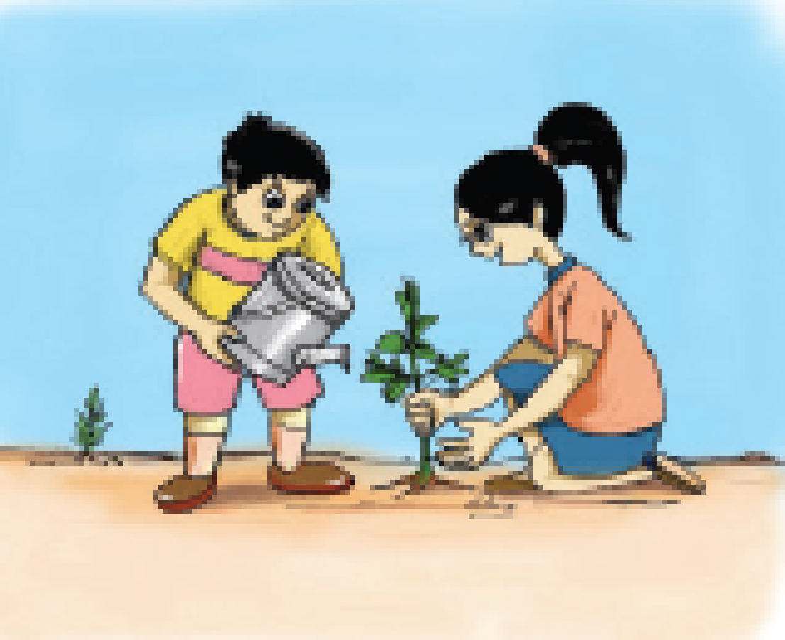
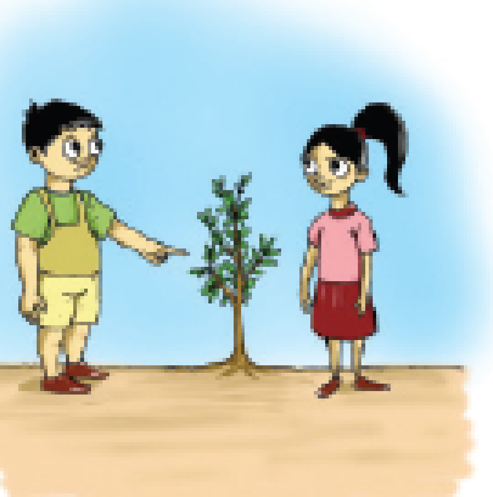
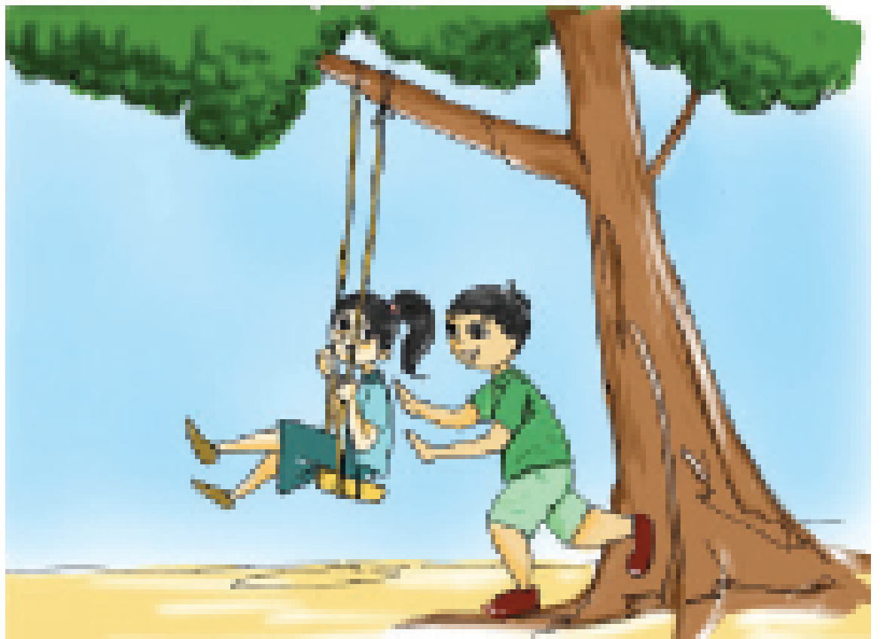
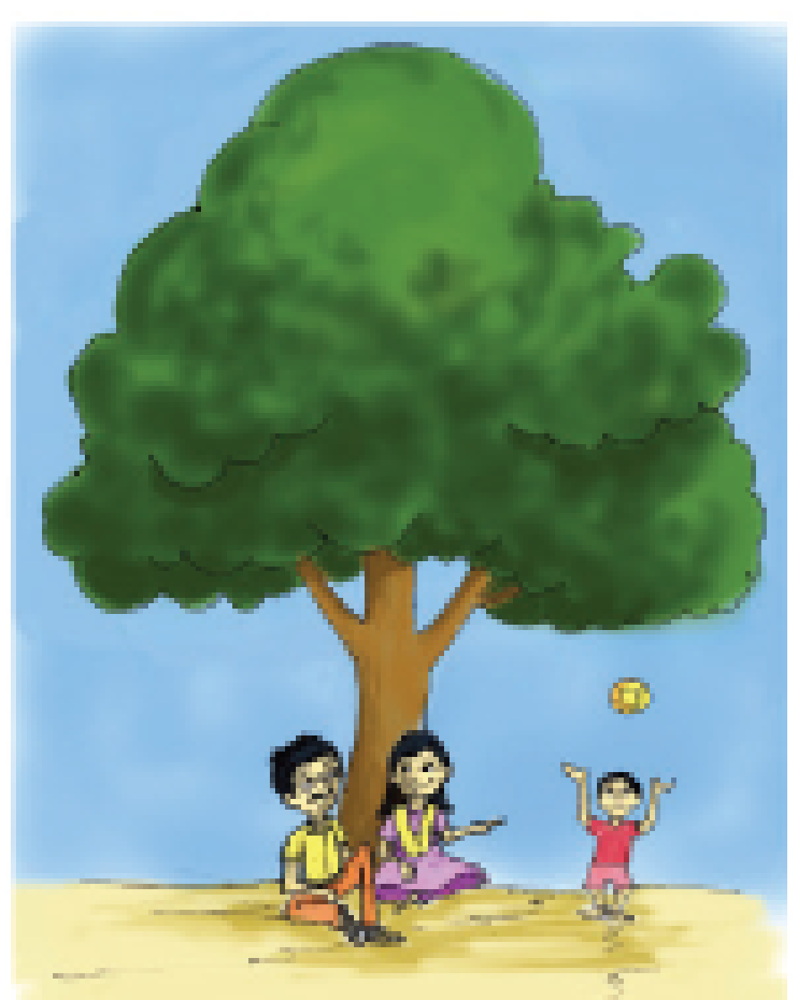
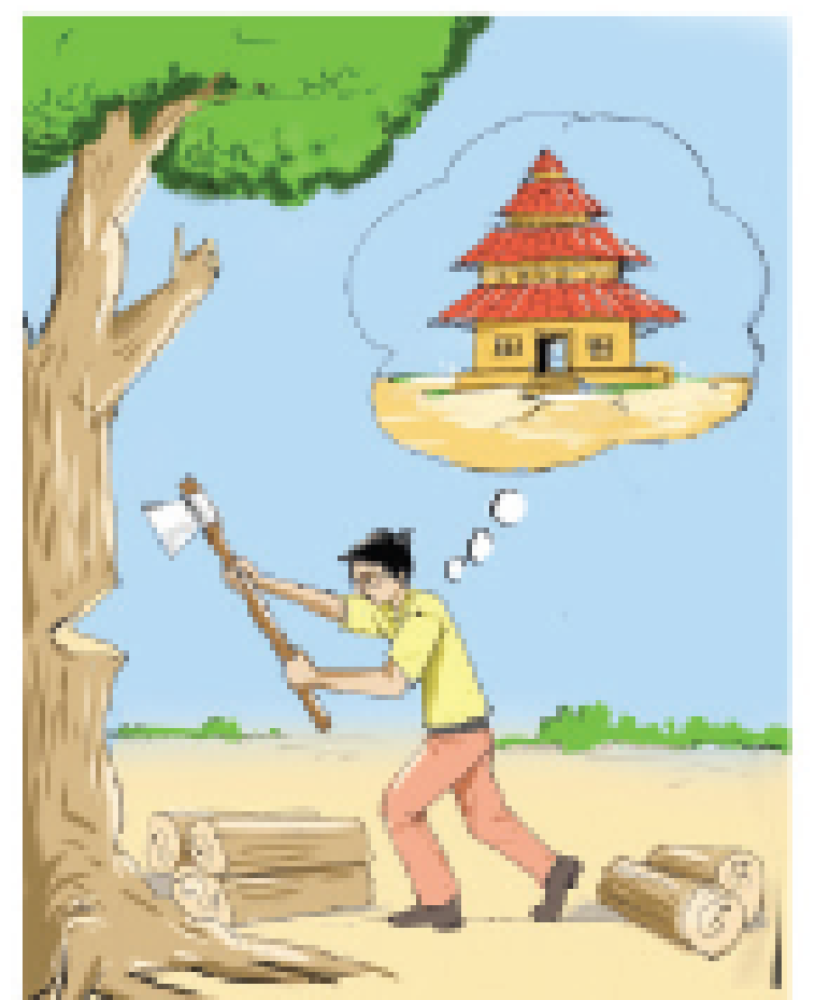
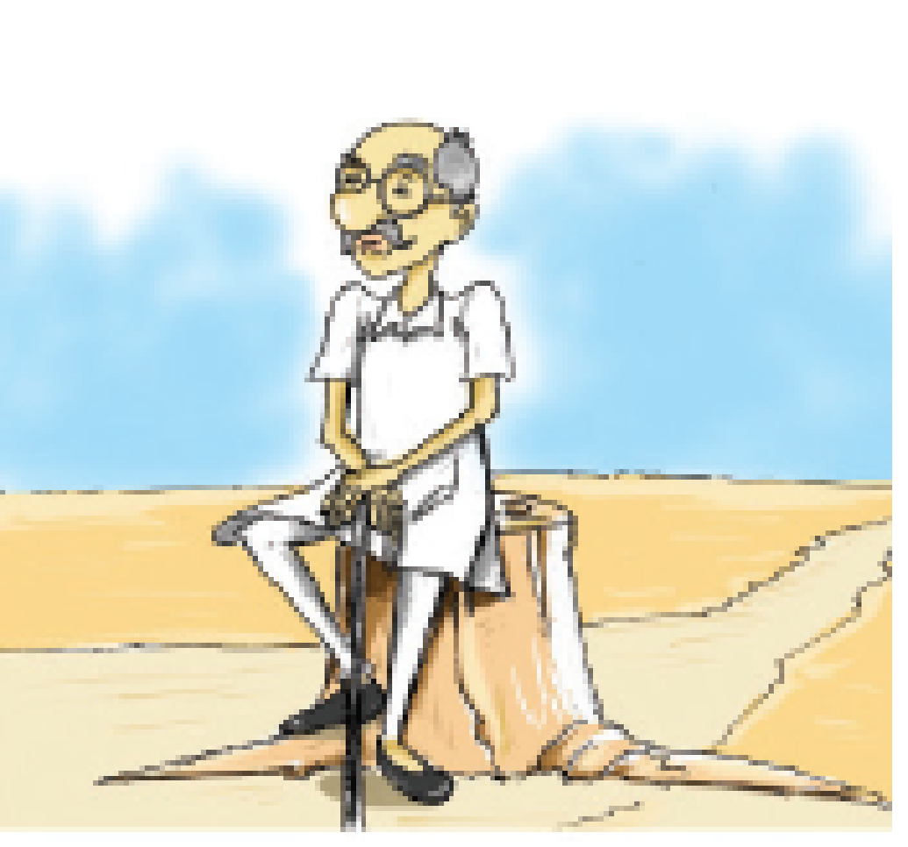

IMAGE,
QR CODE TV9Q3 is given.
One morning, as Nandhu was walking to school, a big truck went past him. The truck went over a bump in the road and a box fell down. The box broke open. The truck kept going and was soon gone.
Out of the broken box there fell a small brass lamp. It looked just like the magic lamp that was drawn in Nandhu’s storybook. It was small and made of brass. It had a handle and a cover. Nandhu wondered if this was a magic lamp too. He decided to take it home and try it out.
“Where did you get it?” said his mother,
“It looks like a lamp.” “It fell off a truck. Is it a magic lamp? It looks just like the one in the book,” said Nandhu. As he wiped the lamp, Nandhu noticed a small button on the side. When he pressed it a bright blue light came on and lit the whole room
The description of the picture is begins

A girl planting a sapling and a boy watering the sapling is shown in the picture.

The conversation picture of a girl and a boy standing near a sapling is given.

A girl swinging with a boy under a tree is given.

The man and his wife sitting under the tree with their playing child picture is given.

The picture of a man who is cutting down the tree with the imagination of building a wooden house is given

The picture of an old man sitting on the log of a cutdown tree is given
The description of the picture’s is ends